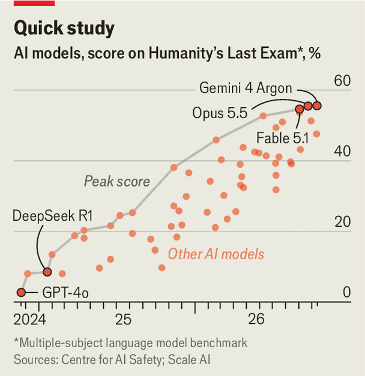

AI companies want to become frontier scientific researchers
Better AI models may be their reward
Oct 15th 2026
SIR DEMIS HASSABIS says he started Google DeepMind to create “the ultimate tool for science”. In the years since, DeepMind’s research has graced the cover of Nature nine times. At the beginning that was for breakthroughs in AI itself, but its more recent successes have come from applying AI to other areas of scientific endeavour. Its protein-folding model AlphaFold, for example, earned Sir Demis a share of a Nobel prize in 2024.
DeepMind’s peers are catching up. This autumn, OpenAI reshaped the terrain of mathematics, first by solving a landmark Millennium Prize problem and then by publishing solutions to more than 300 open questions in a single day. Dario Amodei, Anthropic’s boss, declared in September that the company had discovered a potential successor to CRISPR, a gene-editing technique, using its Claude model, promising that AI-powered biology is on an “exponential trend”.
Smaller companies are joining in: in 2024 Sakana AI, a Tokyo-based research group, unveiled an “AI scientist” which its creators claimed could complete all the tasks required to write a scientific paper. In a peer-reviewed article published in Nature this March, Sakana reported that the AI scientist wrote a paper which passed the first round of peer review for a top-tier AI conference—a hurdle which defeated almost a third of the human-written papers.
Such work was initially welcomed by the broader scientific establishment. But the growing pace of AI-powered discovery has put many on edge. Part of what unnerves researchers is the extent to which AI companies are not merely providing a tool for discovery but choosing to wield it themselves. This is unusual: AI companies are content to sell their services to everyone from accountancies to media outlets without operating in those industries themselves. Why, then, is the situation so different with science?
What the labs say implies that they see pushing the frontiers of science as simply a good thing to be doing—or, more cynically, a good thing to be seen doing. Much of the scientific work at the biggest AI companies is promoted as research for its own sake. Sir Demis’s lofty goals came about, he told The Economist, because he wanted “to understand what’s going on here in the universe”. Practical applications, as for all good scientists, were almost secondary.
DeepMind’s peers echo the message. “We just genuinely care about this endeavour,” says Mark Chen, OpenAI’s chief research officer, dismissing accusations that the company’s scientific efforts are corporate philanthropy. Many of the company’s researchers were scientists or mathematicians before moving to the corporate sector, says Mr Chen, and they still yearn for the beauty of a new discovery.
The prospect of profit doesn’t hurt, though. Isomorphic Labs, a spin-out of DeepMind founded by Sir Demis, is the exemplar. The company seeks to use DeepMind’s technology to develop novel therapies for cancers, as well as cardiovascular and immune conditions. It has developed its own technology, an updated version of AlphaFold 3, with the ability to do for biochemical reactions what its predecessor did for protein folding. If the gambit pays off, then Isomorphic will begin to show a financial return as its candidate molecules, of which it has 17 under development, begin to be turned into real medicines by pharmaceutical companies around the world.
Praise and profits, strong motives though they are, are only part of the story. The real reason AI labs are so keen to invest in science is probably because it is the best way to improve their models.

In the early days of large language models (LLMs), scientific aptitude was one of the benchmarks used to test how models surpassed their predecessors. But that test was no trickier than a high-school science quiz. Today’s best models, by contrast, are capable of handling postgraduate level questions, scoring a little over 50% on “humanity’s last exam”, a quiz spanning all domains designed to be as hard as a knowledge-based test can be (see chart).
This rapid progress means AI labs are running out of data on which to test their models. The logical next step is for AI models to do novel research themselves. “Science and mathematics”, says Pushmeet Kohli, the head of Google DeepMind’s science team, “act as the playground, the grand challenges that we give to AI to drive innovation.”
Unsolved questions in mathematics are particularly valuable, since any answers models find can be formally proven and verified. The frontier of AI development relies on a technique known as “reinforcement learning with verifiable rewards”—labs train AI models by giving them tasks in domains which have objectively correct answers, and reward them for success. There has been speculation that OpenAI’s latest dump of maths papers may be the by-product of one such training run. “Provide a formal proof of this unsolved problem” could be the hardest verifiable challenge humanity has to offer.
Pushing models to be world-leading in mathematics, however, does not necessarily mean they will be more competent at other tasks. Churning through scientific problems may make the intelligence of AI systems still more “jagged”, meaning they show superhuman potential in some domains while making laughable errors in others (if less frequently than they once did). Whether AI models with scientific ultra-smarts go on to develop general competency is an “existential” question, according to one company insider, with ramifications for the future of humanity.
There are reasons to think the intelligence of models trained this way may be less jagged than expected. Mr Chen, of OpenAI, invokes the “bitter lesson” of AI science: that bigger, architecturally simpler systems turn out to be better than ones with baroque additions designed to aid specialisation. According to Rich Sutton, the AI researcher who first used the phrase, AI systems in domains from chess to speech recognition got better once researchers stopped trying to dictate how their models should approach the task.
Recent work bears that out. Preliminary research led by Yong Liu from Shanghai Jiao Tong University found that training systems—without micromanagement—to fold proteins appears to make them better at everything else, too. A version of Alibaba’s open-source Qwen AI trained on questions and answers related to protein folding displayed improved capabilities in such areas as spatial, graph, scientific and general reasoning.
The upshot is that OpenAI is, Mr Chen says, “bitter lesson-pilled”: the company has bet big that the best way to build a model for any one task is to build a model that can handle all tasks. Not everyone agrees. DeepMind, for example, has had success developing specialised models, not least AlphaFold.
But the bitter lesson is coming for it, too. The company’s “co-scientist”, released in May, is a general system, using multiple instances of its Gemini chatbot to generate new hypotheses, ponder them internally, and improve them. This struck many as being a pivot from the company’s prior approach. (The tool was released shortly before Sir Demis moved into a new role as chief scientist of Alphabet, DeepMind and Google’s parent company.) Dr Kohli characterises the changes as an expansion of its scientific work.
If the bitter lesson continues to hold, it could reshape scientific endeavour. Building a small, focused machine-learning system is within the scope of many researchers. An AI-powered supernova detector, for instance, took “just 15,000 examples and the computing power of my laptop” to train, according to Héloïse Stevance, a physicist at Oxford University. But building a frontier LLM takes terabytes of data, and a server farm’s worth of compute—enough to render it out of reach of all but a few of the richest companies in the world.
And better models might offer a prize that is worth throwing capital towards. A good AI scientist may also prove to be good at developing better AI systems. Making model training more efficient and AI chips less power-hungry are goals upon which companies from Sakana to DeepMind have set their sights. Jack Clark, a co-founder of Anthropic, predicts that this task will be fully within the capabilities of AI systems by 2028. A future of AI scientists making more AI scientists beckons. ■